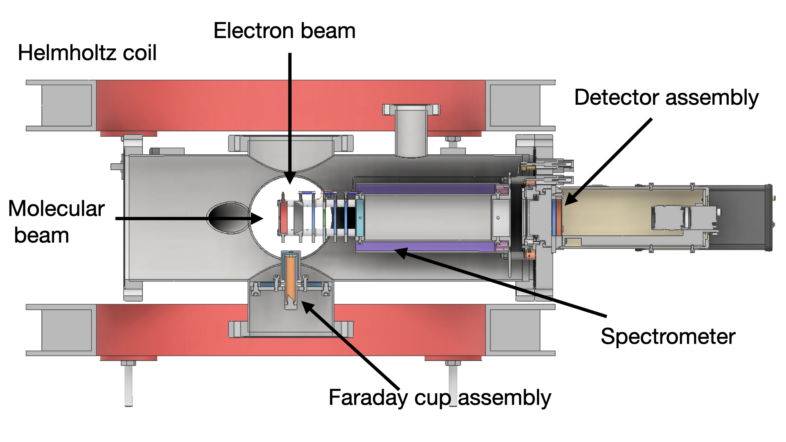

I designed and developed a custom velocity map imaging (VMI) spectrometer optimized for investigating molecular negative ion resonances during my postdoctoral research at the Radiation Laboratory, University of Notre Dame, USA. This independent project was funded by the United States Department of Energy (DOE) and enabled momentum-resolved measurements of anions formed through resonant low-energy electron attachment to biologically relevant molecular systems. This facility now serves as a robust platform for future studies of electron-induced processes relevant to AMO physics, radiation chemistry, and biomolecular reaction dynamics.
The VMI technique provides detailed insight into fragmentation pathways, ion kinetic energy distributions, and angular scattering dynamics associated with dissociative electron attachment processes. The kinetic energy distribution reveals the dissociation threshold and energy release during fragmentation, whereas the angular distribution reflects the underlying symmetry of the transient resonant states involved in the electron attachment process.

Schematic view of the experimental setup that I designed and constructed at the University of Notre Dame, USA (Phys. Rev. A, 108, 052806, 2023).
Dipayan Chakraborty*, Daniel S. Slaughter, and Sylwia Ptasinska
Physical Review A, 108, 052806, (2023)
Anirban Paul, Daniel S. Slaughter, Sylwia Ptasinska, Dhananjay Nandi, Ian Carmichael, Jimena D. Gorfinkiel, and Dipayan Chakraborty*
Physical Review A, 111, 042804, (2025)